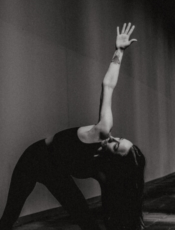
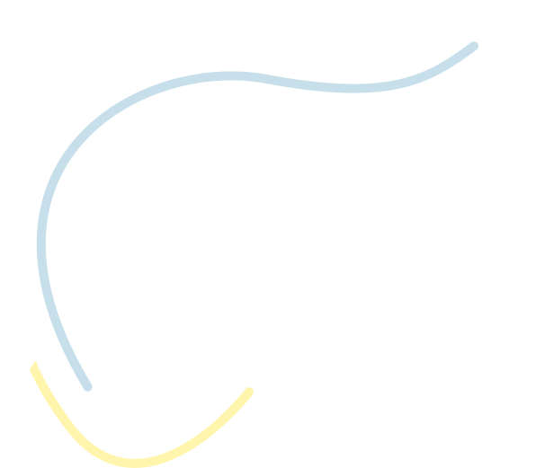
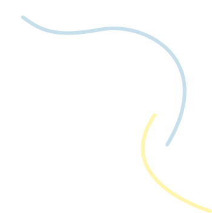
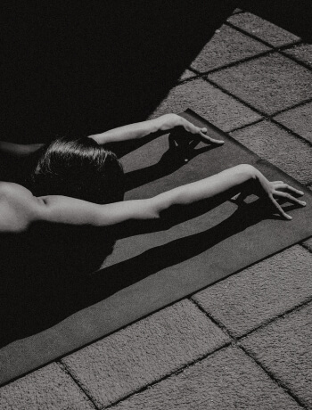
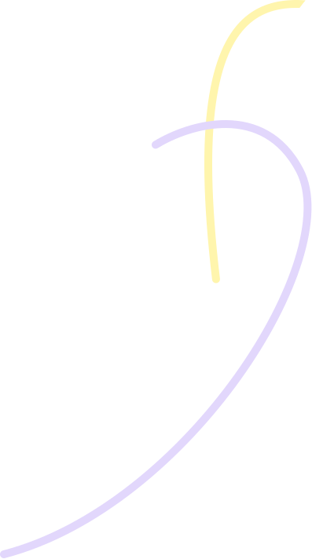
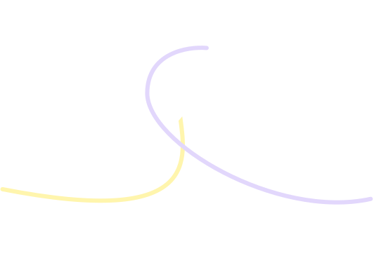
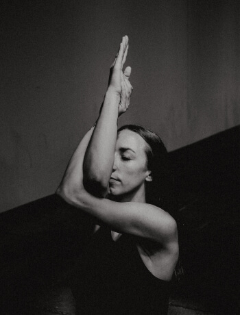
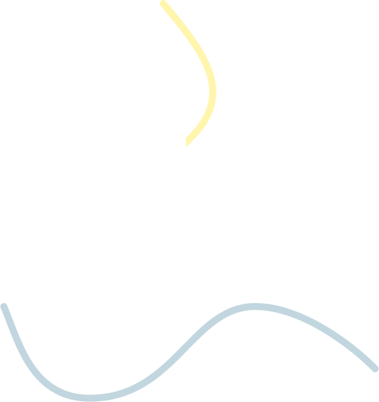
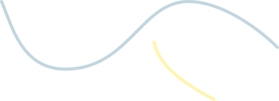

Yoga in Essen
Mit Herz & Verstand


mein Fokus
Ursprünglich war Yoga für mich einfach ein Sport. Doch mit der Zeit identifizierte ich mich Stück für Stück mehr mit der Philosophie über den Zusammenhang von Körper und Geist – und bin mir selbst dadurch nähergekommen. Verbesserte Konzentration, ein gutes Stressmanagement & bessere Schlafqualität waren nur einige der Vorteile, die ich schnell spüren durfte. Diese Erfahrungen möchte ich als Yoga-Lehrerin an andere weitergeben. Gelernt habe ich klassisches Hatha Yoga nach der Sivananda Tradition, welche einen besonderen Fokus auf den ganzheitlichen Ansatz von Yoga legt. Nach einer Fortbildung im Yoga Sequencing habe ich meine Liebe zum Vinyasa Yoga entdeckt.
Jeder Körper ist einzigartig. Daher liegt mein Schwerpunkt auf der Förderung deines individuellen Körpergefühls anstatt einer perfekt aussehenden Außenwahrnehmung.
ohne hokus pokus
mit herz und verstand
So bauen sich meine Kurse auf
Hatha
gezielte asanas in achtsamen flows
Einatmen, ausatmen – und dazu bewegen. Das ist der Kern von Vinyasa Yoga, bei dem die Asanas fließend ineinander übergehen.
Die Grundlage hierzu ist Hatha Yoga – die Körperhaltungen (Asanas) im Yoga. „Ha“ bedeutet Sonne, wohingegen „tha“ mit Mond übersetzt wird – daher auch sun moon yoga. Die Asanas dehnen und kräftigen unsere Muskeln, Sehen und Bänder. Sie bewahren uns vor Atrophie, der Verkümmerung jeglicher Organismen und Bestandteile unseres wertvollen Körpers.
Um während der fließenden Übergänge eine gesunde Körperhaltung sicherzustellen, lege ich bei meinen Flows mehr Wert auf Achtsamkeit und langes Halten als auf schnelle Bewegungsabläufe.



Yin
stretching für den körper, cooldown für den geist
Am Ende der Yogastunde sind Körper & Geist nun bereit für intensive Dehnungen. Bei der nachfolgenden Yin Yoga Sequenz fokussieren wir uns auf das Gewebe im Körper, um es gesund und flexibel zu erhalten. Die sorgsam ausgewählten Asanas werden lange gehalten, um unserem Gewebe Zeit zu geben, sich zu öffnen. Denn durch das Dehnen nach körperlicher Anstrengung im Vinyasa können sich die Muskeln entspannen und schneller regenerieren. So werden deine Beweglichkeit und Flexibilität gefördert.
Gleichzeitig bekommt unser Geist dabei endliche eine Pause, um sich zu sortieren – quasi eine aktive Meditation. Denn diese Ruhe fehlt uns häufig in unserem stressigen Alltag.



Raja
mehr positivität und ein starkes bewusstsein
Jeder Schritt, den wir gehen und jede Handlung, die wir tun, fängt mit einem Gedanken an – wie bedeutend ist es also, unseren (gesunden) Geist im Auge zu behalten? Mir geht es nicht darum, negativen Gefühlen keinen Raum zu geben oder sie zu unterdrücken. Es geht vielmehr darum, durch die Beobachtung von Verhaltensmustern deinen Geist nachhaltig zu schärfen und die Ablenkungen des Alltags auszumerzen. Dadurch kannst du Stück für Stück mehr echte Positivität und tiefe, innere Zufriedenheit erlangen, welche durch äußere Umstände nicht mehr so leicht zu erschüttern ist.
Da für meine eigene Praxis Raja Yoga eine große Rolle spielt, verbinde ich die körperliche Praxis also gerne mit Thematiken aus dem königlichen Yogaweg, dem Raja Yoga.



starker körper
klarer geist
Das Ziel jeder meiner Kurse


sei dabei!